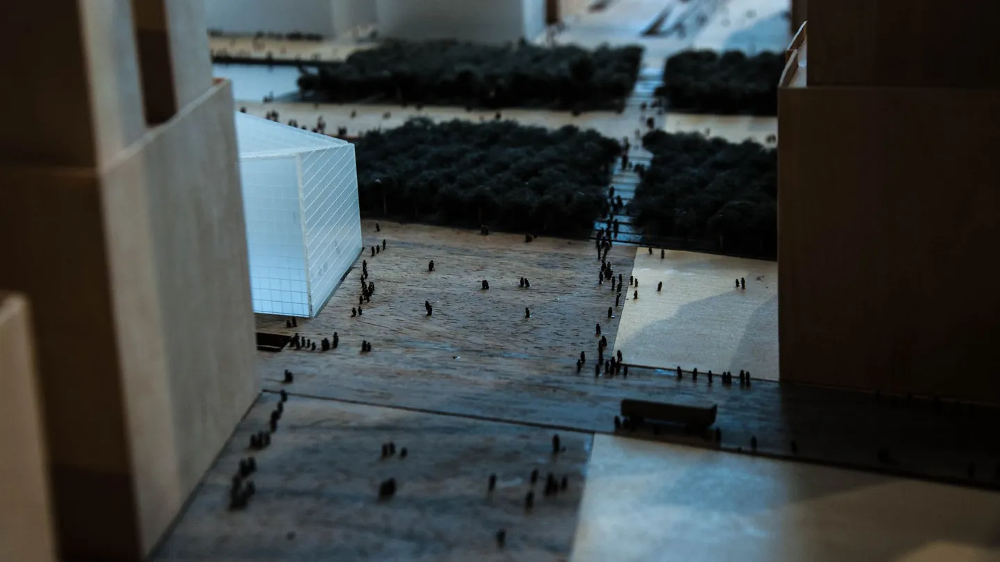
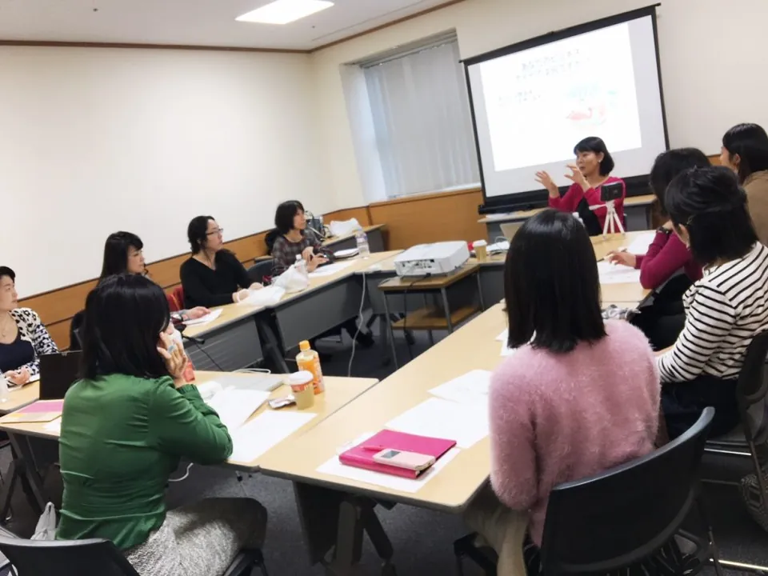
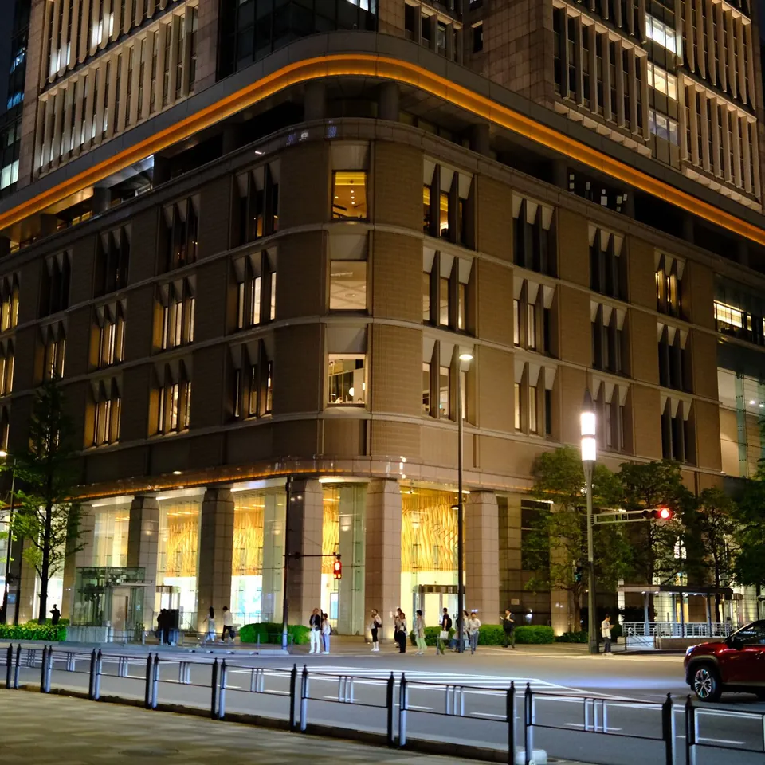
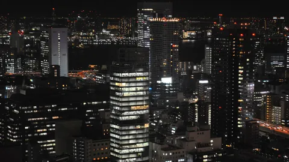
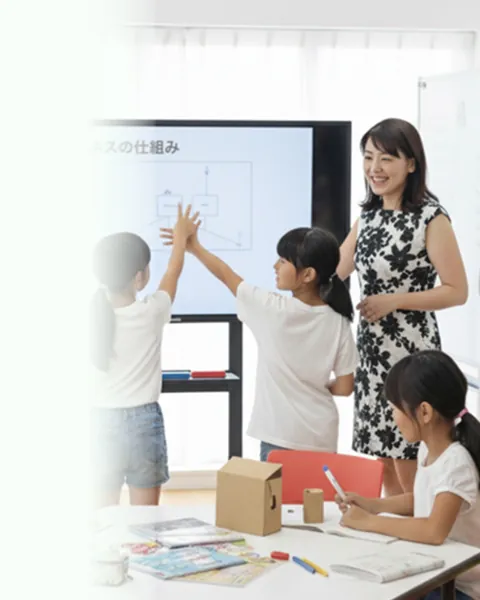
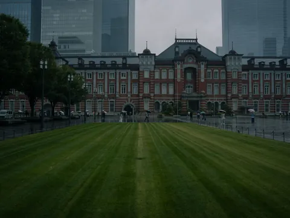
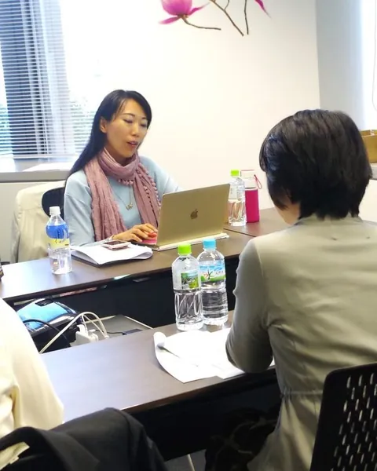
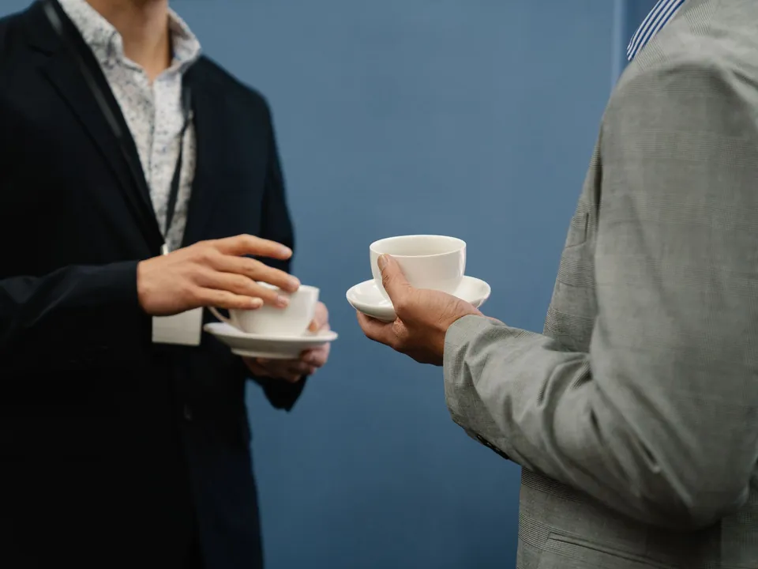

VISION20年後、同じ釜の飯を食った経営者が
全国にいる状態をつくる。
若い経営者どうしが切磋琢磨する横のつながりは、経営者にとって長く効く資産になります。私たちは、そのつながりを子どもの時点から設計することを目指しています。
このページは、これから構築していく構想をまとめたものです。実施の時期・規模・条件は、決まり次第このページでお知らせすることを目指しています。

構想の背景
地域や業界を越えて、若い経営者どうしが学び合い、競い合う横のつながりは、青年会議所のような場として、多くの経営者を支えてきました。私たちは、そうしたつながりを、大人になってから探すのではなく、子どもの時点から育てていくことを目指しています。
同じ時期に事業の1サイクルを経験し、同じ発表の場に立った仲間が、20年後にそれぞれの地域で経営を担っている状態を目指しています。その関係を、プログラムの内側に構築していきます。

構成メンバー像
次の5つの立場の人がつながるネットワークを構築していきます。
受講生
いま、事業の1サイクルを経験している子どもたち。
卒業生
プログラムを終え、それぞれの進路に進んだ人たち。
保護者である経営者
受講生の保護者として関わる経営者。
協賛企業
授業や見学を通じて、自社の仕事を見せる企業。
教室運営者
各地でプログラムを運営する法人。




CEOキッズアカデミーの授業・講座の様子（大人・オフィスの写真はイメージです）
3つの段階で構築していきます
地域単位の交流会・合同発表会
まず地域ごとに、受講生の合同発表会と、保護者・協賛企業の交流会を開くことを目指しています。
世代横断の年次大会
次に、受講生・卒業生・経営者が世代を越えて集まる年次大会を構築していきます。

卒業生が運営側に回る自走組織
最終的に、卒業生が運営を担い、次の世代を迎える側に回る自走組織を目指しています。
企業として参画する意味
将来の経営者層と、一度きりで終わらない継続的な接点を持てる場として、企業枠を設けることを目指しています。協賛企業プログラムに参加する企業から、段階的に参画いただける形を構築していきます。